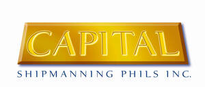

Trade Mark Journal No.2025/048 28 November 2025
UK00004298216 20 November 2025 (35,39,41)

- Class 35
- Personnel recruitment services; Recruitment of seafarers and maritime personnel; Crew management services for ships; Personnel placement and staffing services in the maritime and offshore industries; Human resources management for shipping operations; Business administration and business management services relating to the operation of vessels; Crew scheduling and personnel rostering; Compilation and maintenance of personnel records; Payroll preparation and payroll administration services for seafarers; Business consultancy and advisory services relating to crew deployment, vessel operations and maritime staffing.
- Class 39
- Maritime transport services; Shipping services; Transport of passengers and goods by sea; Operation of ships for the transport of goods or passengers; Vessel manning and operation services; Crew transfer services; Arranging and coordinating transport of crew, personnel and equipment; Logistics services relating to vessel operations, maritime transport and crew movement; Port and terminal services; Arranging ship berthing, mooring and pilotage; Tug, towage and ship-assistance services; Marine traffic management and advisory services; Chartering of ships; Rental and charter of vessels; Transport information, advisory and support services; Arrangement of marine travel, transport reservations and ticketing for crew and personnel; Organisation, booking and management of crew travel; Marine transport consultancy services; Advisory services relating to maritime safety, compliance and operational standards.
- Class 41
- Training services; Provision of training for seafarers and maritime personnel; Maritime safety training; Professional competency training for ship officers and crew; Instruction and certification in navigation, seamanship, safety management and emergency response; Conducting courses relating to maritime regulatory compliance; Educational services relating to vessel operations, cargo handling and marine engineering; Organisation of workshops and training seminars in the field of maritime operations; Provision of online training and e-learning for seafarers.
Capital Shipmanning Phils. Inc.
Representative: Abion UK Limited